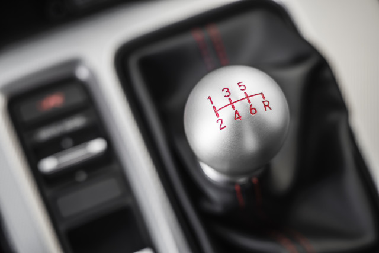

I've wanted to properly learn how to drive manual and own a manual car ever since my friend got me into cars at the age of 15.
One of the first steps I took (This is also how my friend taught me the basics) was buying a logitech G29 wheel and shifter.
With this new wheel and shifter, I played a lot of racing games, especially a simulation game called BeamNG Drive (highly recommend).
I had basically been driving manual in all these games for years to help me learn it and eventually I bought a manual car!
The car in question was a 2023 Acura Integra, which I would not have been able to afford it if it wasn't for my dad. Thank you dad.
However I remember I had to test drive it twice... because the first time I barely knew what I was doing and was terrified.
But eventually I kinda got it and wasn't as nervous. I've been driving manual infrequently for a month now and it's definitely mixed.
On one hand it's sooooo fun, I really enjoy twisty roads and going through gears and it's fun to look forward to driving. However... uphills & traffic
These are the only downsides, I have a heart attack every time I roll back on a hill with someone behind, or stall.
Having hill start assist definitely helps but still. Then there is traffic, which is a whole lot of going between 1st and second and using the clutch.
Plus there is always that awkward speed where you are going between 1st and 2nd and you start wishing there was a gear in between.
But other than that it's been really fun! I just wish I could drive more, I only end up driving like twice a week max and not for long.
Also gas prices are egregious right now so I haven't really been doing any joyrides or night drives just for fun... but I do get 32mpg :)
In short, manual can be really fun, there is definitely a steep learning curve at first, but it's rewarding when you overcome it.
It's definitely not for everyone, but I'm glad I now own a manual car. I do have to drive in hilly Seattle on Friday though. Wish me luck T_T
My Overall Rating: 7/10
Also this video shows a pretty similar experience like mine, with using BeamNG Drive to learn manual [Video]